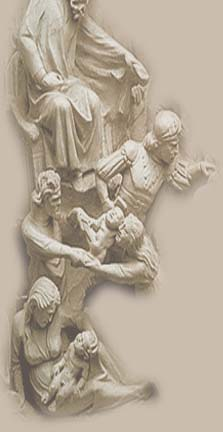

|
 |
Mongol expansion The story of the 1200's is largely that of Mongol military expansion. In Mongolia as the century opened, a chieftain named Temujin emerged from poverty and adversity to unify the Mongol people and earn the title Genghis Khan, the universal ruler. Between 1206 and 1227, Genghis Khan and his Mongol armies imposed their rule in central Asia, Manchuria, northern China, and Persia. Descendants of Genghis Khan later gathered Tibet, southern China, and Russia under the Mongol canopy. They also launched invasions of Japan, Vietnam, Cambodia, Burma, Java, Poland, Hungary, and Germany, though they failed to establish Mongol rule in those lands. Economic hardships |